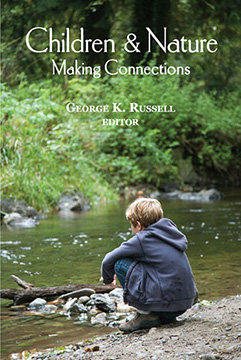
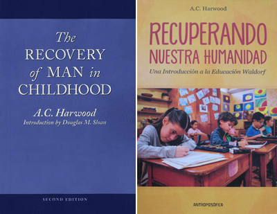
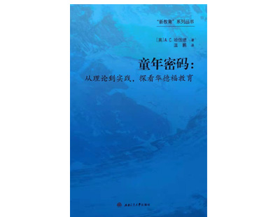
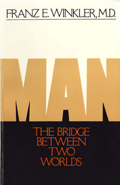
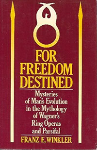
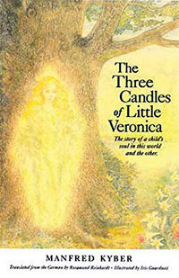
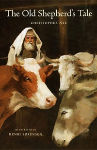
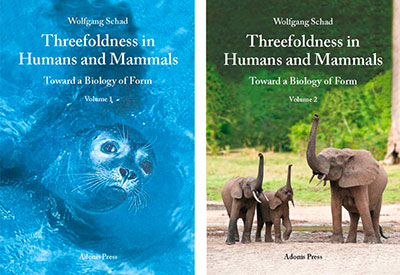

Myrin Books
Books are individually priced. No cost for postage and handling. 40% discount on orders of 5 or more items.
George K. Russell, ed., Children and Nature:
Making Connections
2014 paper. Twelve essays about how children’s connection with nature can be enriched and enhanced in an age of digital media. A refreshing variety of perspectives and useful strategies for accomplishing this are included.

'Children & Nature: Making Connections' is a very important book. The fact that children are spending less and less time in nature--and some not at all--is not only a tragedy for individual children, but for the future of our species. This contact is so important for psychological and spiritual development. When I think of my childhood, I remember spring bulbs pushing up pale shoots through the dead leaves, spiders in the garden carrying tiny babies on their backs, the scent of violets and honeysuckle, and the sound of the wind rustling the leaves as I perched for hours in the branches of my beech tree. It was that magic in childhood that shaped the passion that drives me to spend my life fighting to save and protect the last wild places on the planet. -Jane Goodall
A generation that spends, on average, 7 hours and 38 minutes each day on some sort of screen (hand-held, video, TV, etc.) will have no time for quiet immersion in a natural setting, no time to play in nature, no time to experience the tides or the vicissitudes of the weather or the comings and goings of wild animals or the resurgence of life in the spring. -George K. Russell
Children come to know a tree by peeling its bark, climbing its branches, sitting under its shade, jumping into its piled-up leaves. Just as important, these firsthand experiences are enveloped by feelings and associations-muscles being used, sun warming the skin, blossoms scenting the air. The computer cannot even approximate any of this. -Lowell Monke
Nature programs should invite children to make mud pies, climb trees, catch frogs, paint their faces with charcoal, get their hands dirty and their feet wet… Between the ages of six and twelve, learning about nature is less important than simply getting children out into the nature. -David Sobel
Contributors:
Stephanie Hanes, James E Higgins, Carolyn Jabs, Medicine Grizzlybear Lake, Richard Lewis, Richard Louv, Kelly McMasters, Lowell Monke, Pattiann Rogers, George K. Russell, Scott Russell Sanders, David Sobel
$14.00 paperback
Click to Order
A. C. Harwood, The Recovery of Man in Childhood
Second Edition, 2001. This survey of Waldorf education provides a vision of what child development can look like when it is holistic, nurturing, and imaginatively fertile. Harwood’s book is full of fresh ideas for both parents and teachers. The classic work has been newly edited, with an updating introduction by Prof. Douglas Sloan of Columbia Teachers College.


“a gem” –David Elkind
“crystal clear and full of insight” –Thomas Moore
$14.95 paperback / English, Spanish, or Mandarin edition
Click to Order
Franz E. Winkler, Man—The Bridge Between Two Worlds
A work of remarkable perceptiveness and insights on how education, psychology, and even international relations can become more conscious and bring healing in our time.

“The new frontier of our age does not lie in outer space but in the human soul….We are living in a stage of history as much in need of inner exploits as the fifteenth century was of geographical exploration. But the oceans and mountains which must be crossed on this quest are not visible to physical senses and cannot be found on maps and globes. To find them we must restore the sight within which began to wane millenniums ago. There is no alternative, for ‘where there is no vision, the people perish.’” (from the book)
$14.95 paperback
Click to Order
Franz E. Winkler, For Freedom Destined
A study of the text and music of Wagner’s Ring cycle and Parsifal from the perspective of their meaning for humanity’s struggle to become truly free and truly human.

“Since the beginning of history, the great leaders of mankind have tried to bring light into the gathering darkness of man’s life on earth. Moses, Buddha, Jesus, Plato, Aristotle, Goethe, and Emerson are just a few of them. As a human being Richard Wagner with his glaring shortcomings of character may not fit into that illustrious group. Yet in moments of artistic inspiration, a wellspring must have opened in the soul of that strange magician, from which undoubtedly flows a wealth of long-forgotten truth, and a kind of music that can reopen the gateways of spiritual perception.” (from the book)
$14.95 paperback
Click to Order
Like heirloom seeds, children’s classics sometimes vanish because they do not meet the needs of mass market mega-publishers. As a small nonprofit, Housatonic Press can rescue some of these rich stories from oblivion and add new ones that hold promise for the future. We exist to provide a specific form of nourishment for which children, even in our affluent society, are often starved. That nourishment feeds the sense of wonder and the openness to the spiritual that can be found in most healthy children. We seem to nurture these qualities in a wholesome and imaginative way. Help us in this work by sharing our books with children you feel might enjoy them.
Manfred Kyber, The Three Candles of Little Veronica
Generations of readers in Europe have loved this story, now available here in an excellent translation with sensitive illustrations.

In Veronica’s early youth she can see beyond the physical appearance of things and can converse with a hedgehog, a blackbird, and other residents in The Garden of Spirits. Accompanied by her cat Mutzeputz and guided by her wise Uncle Johannes, Veronica grows beyond innocence and into the life of the House of Shadows, the Baltic town of Halmar, the cursed Castle Irreloh, and the people whose destiny intersects hers.
$19.95 Paperbound
Click to order
Christopher Nye, The Old Shepard's Tale
In this award-winning story the gentle creatures in the stable on the night of Jesus’ birth being a fresh perspective to this momentous event.

Their gifts and messages and the example of the old shepherd who cares for them can help children develop a respect and gratitude for all animals whose work and lives sustain us. Many illustrations.
$17.95 cloth-bound
Click to order
Wolfgang Schad, Threefoldness in Humans and Mammals: Toward a Biology of Form
The result of over 50 years of research, Threefoldness in Humans and Mammals: Toward a Biology of Form is the beautiful, authorized edition of Wolfgang Schad’s life’s work. In chapter after chapter of this monumental two-volume work Schad demonstrates in detail how the dynamic concept of the threefold organism-first described by Rudolf Steiner a century ago-sheds new light on aspects of mammals including size, form, coloration, physiology, embryonic development, behavior, and habitat. Indeed, he shows how the threefoldness of the organism-comprised of the polarity of nerve-sense and metabolic-limb systems and the mediating circulatory-respiratory system-is key to understanding the extraordinary diversity of our closest animal relatives.

In collaboration with Adonis Press
2-Volume Slip-cased set. $125
For further details and to order this important book CLICK HERE
Books are individually priced. No cost for postage and handling. 40% discount on orders of 5 or more items.